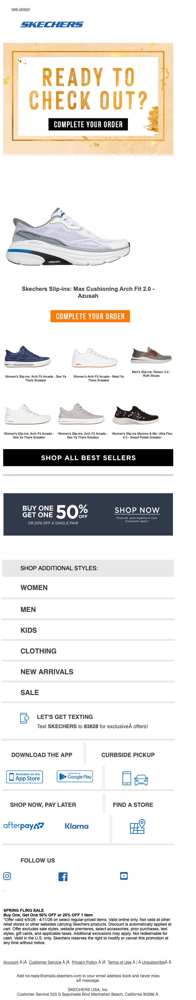

Did you forget something?
| From | SKECHERS <hello@msgs.skechers.com> |
| Received | 2026-04-09 13:20 UTC |
| Score | 5/10 |
## Email Review: Skechers — "Did you forget something?"
1. Executive Summary
This is a cart abandonment email with the right idea but the wrong execution. The core message — "you left something behind, come finish your order" — is clear at the top, but Skechers immediately undercuts the urgency by piling on a sitewide promo, category links, an SMS signup, an app download block, and a store finder. The result is a recovery email that feels like a newsletter. For a transactional trigger with high purchase intent, that's a missed opportunity.
2. Business Impact Score: **5 / 10**
High-intent audience, correct send trigger, recognizable brand — but the email works against itself by diffusing focus instead of closing the loop.
3. What's Working
- Clear hero intent. "READY TO CHECK OUT? COMPLETE YOUR ORDER" is unambiguous and placed immediately above the fold. No guessing required.
- Dedicated CTA button. The teal "COMPLETE YOUR ORDER" button is visually distinct and placed directly below the abandoned product — logical placement.
- Best sellers module. Including adjacent product options is smart merchandising for cart abandonment; if the left-behind item doesn't close, maybe a related one will.
- Skechers logo and branding are clean and consistent at the top.
4. What's Weak
- Hero visual is flat. The hero frame has a warm illustrated border, but the abandoned product image is small and low-impact. For a cart abandonment email, the product should dominate — this one gets lost.
- Promotional dilution. The "BUY ONE GET 50% [off]" banner mid-email directly competes with the cart recovery message. If there's a sitewide deal, why urgently complete this specific order? It creates a mixed signal.
- Category navigation block is dead weight. WOMEN / MEN / KIDS / CLOTHING / NEW ARRIVALS / SALE is a text list with no visual hierarchy or product imagery. It adds scroll without adding value in this context.
- Footer is overloaded. App download, pay later, rewards, store finder, SMS signup, social follow — this is five separate modules stapled to the bottom of a cart abandonment email. It reads like they appended the standard newsletter footer without editing it for this trigger.
- No urgency signal. Cart abandonment emails need a reason to act *now* — limited stock, cart expiration, price change. None is visible here.
5. Recommendations
1. Lead with the product, not just text. Make the abandoned item's image larger and more prominent — it's the whole point of the email.
2. Cut or consolidate the footer modules. Keep "SHOP NOW, PAY LATER" if it directly removes a checkout barrier. Drop or collapse the rest — app, store finder, social — for this trigger.
3. Add urgency copy. "Your cart expires in 48 hours" or "Only X left in stock" should appear near the CTA. Even if approximate, it motivates action.
4. Resolve the promo conflict. Either surface the 50% deal *in the context of the cart item* ("Buy your pair + one more at 50% off") or remove it from this email entirely. Don't let it compete.
5. Trim the category links. If you must include them, use product images and limit to 3 categories max.
6. Bottom Line
Skechers is sending an abandoned cart email that looks like a weekly digest. The abandonment hook is clear but surrounded by so many competing modules that the urgency dissipates. Stripping this to hero product → CTA → one supporting offer → exit would meaningfully improve conversion.
7. Evidence
| Module | Observation |
|---|---|
| Overall purpose | Cart abandonment recovery — visible from hero headline and CTA |
| Hero / primary value prop | "Ready to Check Out? Complete Your Order" with product image and teal CTA button. Product image is undersized for the ask. |
| Membership / benefits | Not visible — no loyalty or rewards messaging in the body |
| Product discoverability | Best sellers row with ~4–5 small product thumbnails; limited detail visible at this scale |
| Utility / secondary modules | App download, SHOP NOW PAY LATER, CONNECT REWARDS, FIND A STORE, SMS signup, social follow — all present and all competing |
| Bugs / friction | No broken images or rendering errors visible. Email reads cleanly but is structurally bloated. |
## Technical Audit
## Technical Audit — SKECHERS "Did you forget something?" (Abandoned Cart)
From: hello@msgs.skechers.com | ESP/Platform: Attentive (skechers.attentivemail.com)
1. Technical Summary
Table-based layout built in Attentive with responsive CSS media queries; all links route through Attentive's click-tracking redirect system. HTML source is truncated, so footer compliance elements (unsubscribe, physical address) could not be fully verified.
2. Link & Tracking Issues
HTTP click-tracking URLs (not HTTPS)
All tracked links use http:// rather than https://:
`
http://skechers.attentivemail.com/ls/click?upn=u001.LNc6Vor...
`
Modern browsers and email clients (especially Gmail on Android) may flag or downgrade HTTP redirects. Attentive supports HTTPS tracking domains — this should be enforced.
No UTM parameters visible pre-redirect
The destination URLs are fully encoded inside Attentive's upn= parameter, making pre-send UTM verification impossible from source inspection. Recommend audit of post-redirect destination URLs to confirm utm_source, utm_medium, utm_campaign, and utm_content are firing correctly (especially critical for abandoned cart attribution).
3. Rendering & Accessibility
Empty <title> tag
`html
<title></title>
`
Screen readers used inside email clients (e.g., NVDA + Outlook) may announce a blank document title. Should be populated with a descriptive string (e.g., "Skechers – Your Cart Is Waiting").
Link underlines suppressed globally
`css
#MessageViewBody a { color: inherit; text-decoration: none }
`
This removes underline affordance from all links in Gmail's webview. Combined with low-contrast anchor color (#434343 on white), this degrades accessibility for low-vision users and violates WCAG 2.1 SC 1.4.1 (use of color alone to convey information).
Preheader uses mixed Unicode padding characters
The preheader block mixes Hangul filler (͏ U+034F) and soft-hyphen ( U+00AD) characters for whitespace padding — two distinct invisible character techniques in the same element. This is inconsistent and some spam filters (notably Proofpoint) flag heavy use of non-ASCII invisible characters. Standardize on a single zero-width technique.
Image alt attributes unverifiable
Source is truncated before most <img> tags. For an abandoned cart email displaying product images, missing alt text would be a significant accessibility and render failure (images-off scenario).
4. Personalization & Merge Tokens
Source truncation prevents full token audit. Observations from visible HTML:
- No merge tokens are visible in the header/preheader region — the preheader text is static: *"You left something in your cart, get it before it's gone!"*
- An abandoned cart email at minimum requires dynamic tokens for: cart item name(s), product image(s), price, and cart URL. These are expected to appear in the body (not visible in truncated source).
- Risk: If Attentive tokens fail to fire (e.g.,
{{cart_items}}renders empty), the email body may display blank product blocks with no fallback content. Confirm default/fallback values are set for all cart tokens in the Attentive template.
5. Compliance
Sending domain: msgs.skechers.com (subdomain)
From address: hello@msgs.skechers.com
- CAN-SPAM physical mailing address and unsubscribe link are not visible in the truncated source — cannot confirm or deny presence. These must appear in the footer.
- Unsubscribe mechanism: Attentive handles one-click unsubscribe natively; confirm
List-UnsubscribeandList-Unsubscribe-Postheaders are present in the sending infrastructure (not verifiable from HTML source alone). - DKIM/SPF/DMARC authentication: not verifiable from HTML; should be confirmed via header inspection on a live send (
msgs.skechers.commust be aligned with DMARC policy onskechers.com).
6. Email-to-Site Continuity
- All CTAs redirect through
skechers.attentivemail.com/ls/click?upn=...— final destination URLs are base64/encoded and cannot be decoded from source inspection. - Risk: No way to confirm the cart deep-link actually returns the user to their specific cart vs. a generic cart or homepage. For abandoned cart flows, the link must resolve to the user's persisted cart session — verify Attentive is passing the correct cart token in the destination URL.
- UTM continuity: confirm
utm_medium=email,utm_source=attentive, and a campaign-specificutm_campaignvalue are appended to all destination URLs post-redirect.
7. Recommendations
| Priority | Issue | Action |
|---|---|---|
| High | HTTP click-tracking URLs | Switch Attentive tracking domain to HTTPS |
| High | Cart token fallback values | Set non-empty fallback for all {{cart_*}} tokens to prevent blank product blocks |
| Medium | UTM parameter verification | Decode and audit destination URLs from a test send to confirm UTM params |
| Medium | text-decoration:none on all anchors | Scope override more narrowly; restore underlines on body CTAs |
| Medium | Preheader Unicode padding inconsistency | Standardize on single invisible character type (e.g., U+034F only) |
| Low | Empty <title> | Populate with descriptive document title |
| Low | Image alt text | Verify all product images have descriptive alt attributes (confirm in full source) |
